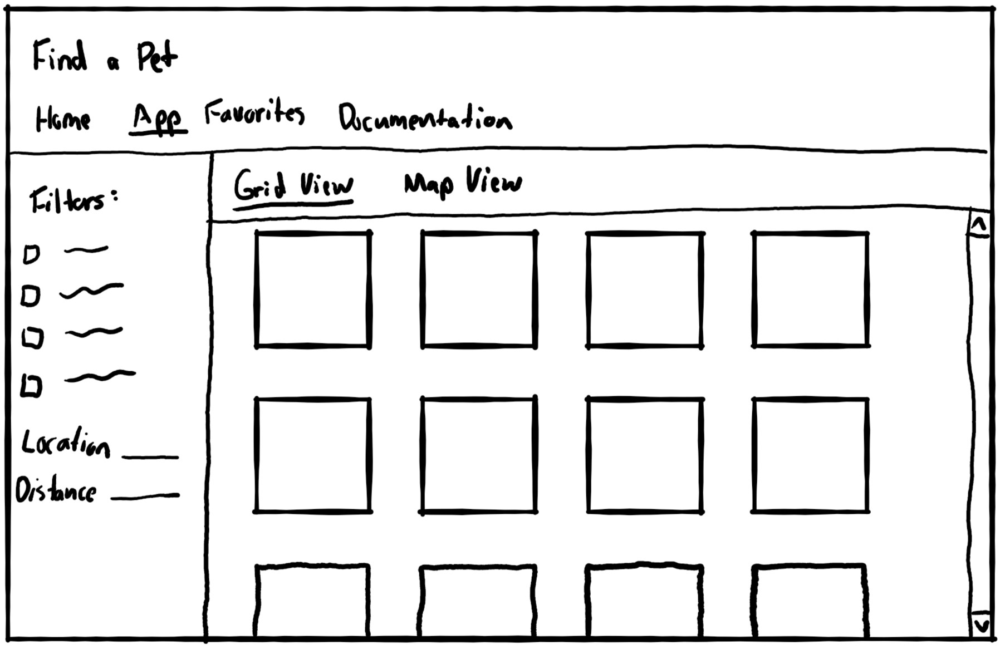

- Location
- Species
- Breed
- Size
- Gender
- Age
- etc.
Documentation
Find a pet to adopt today!
API:
The Petfinder API provides information for adoptable pets, including their location, breed, age, gender, and more.
About:
This app will allow users to search for adoptable pets by:
Users will also be able to view a map of pets if they enter their location, as well as add pets to their favorites for later.
Interface Mockup:
